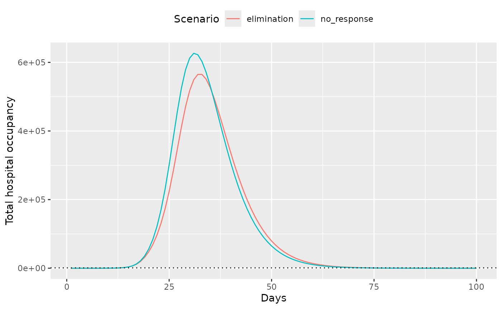

Modelling threshold-dependent economic closures
Source:vignettes/thresholded_response.Rmd
thresholded_response.RmdInitially run the model with no response, and then with an elimination response activated when total hospitalisations reach 1000 or after 30 days, whichever is sooner.
data_baseline <- daedalus(
"Canada",
daedalus_infection("influenza_1918", rho = 0.0), # prevent re-infection
response_threshold = response_threshold,
response_strategy = "none"
)
# get the model timeseries
data_baseline <- get_data(data_baseline)
data_baseline$scenario <- "no_response"
# run the model with a heavy elimination intervention
data_intervention <- daedalus(
"Canada",
daedalus_infection("influenza_1918", rho = 0.0), # prevent re-infection
response_threshold = response_threshold,
response_strategy = "elimination"
)
# get the model timeseries
data_intervention <- get_data(data_intervention)
data_intervention$scenario <- "elimination"Plot the total hospital occupancy for both scenarios to view the effect of interventions.
# sum over age and econ strata as total is more relevant
data <- data[compartment == "hospitalised", .(value = sum(value)),
by = c("time", "compartment", "scenario")
]
# check actual outcomes of interest - these don't look as good
ggplot(data) +
geom_line(aes(time, value, colour = scenario)) +
geom_hline(
yintercept = response_threshold, linetype = "dotted"
) +
labs(y = "Total hospital occupancy", x = "Days", col = "Scenario") +
theme(legend.position = "top")
Note that the effect of response strategies that introduce closures does not appear to be very large — this is because the full range of interventions associated with each strategy is yet to be implemented.